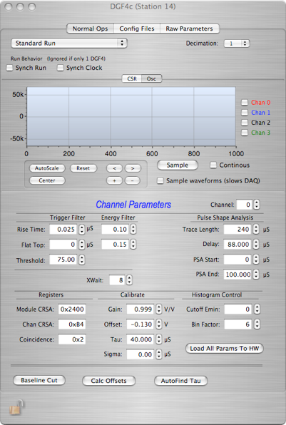
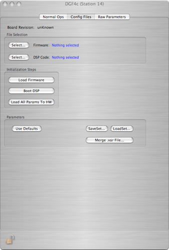
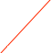
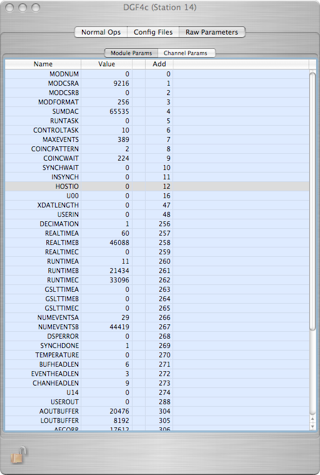
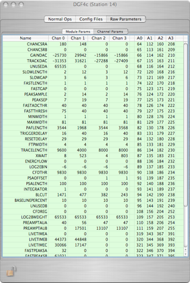

DGF4c Digitizer


This is a four channel digitizer capable of producing histograms and digitized waveforms from 4 channels. This card is made by XIA. There are many parameters that can be set for each channel. The default parameters can be used or customized by loading parameter files. This card can exist only in a CAMAC crate. This card is very complex and is not fully documented here. Please refer to the programmers manual and the users’ guide that came with the card for specifics.

Sample the waveform here
Select type of run

Control status register options for enabling readout for each of the four channels. Also display of live-time and event counts.

Data Format
The format of this card is very complex and is not documented here. Please refer to the programmers manual that came with the card for specifics.



Control status register options for enabling readout for each of the four channels. Also display of live-time and event counts.
Addition high level functions for card set-up. Warning -- not well tested at the time of this writing.
Select and load a configuration file
Select and load a DSP code file
Set channel parameters to defaults, load a previously saved set, or save the current set to a file
Display of module parameters
Display of channel parameters